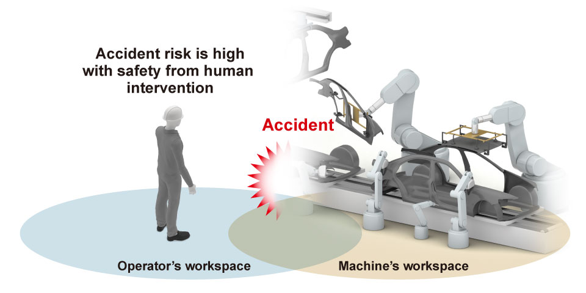
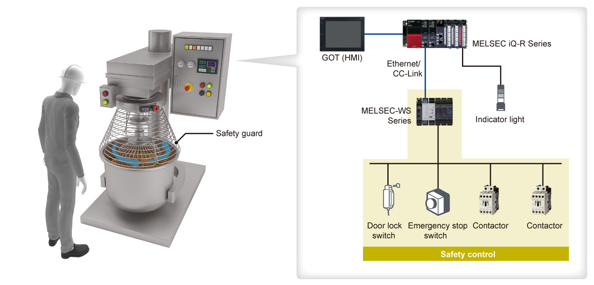
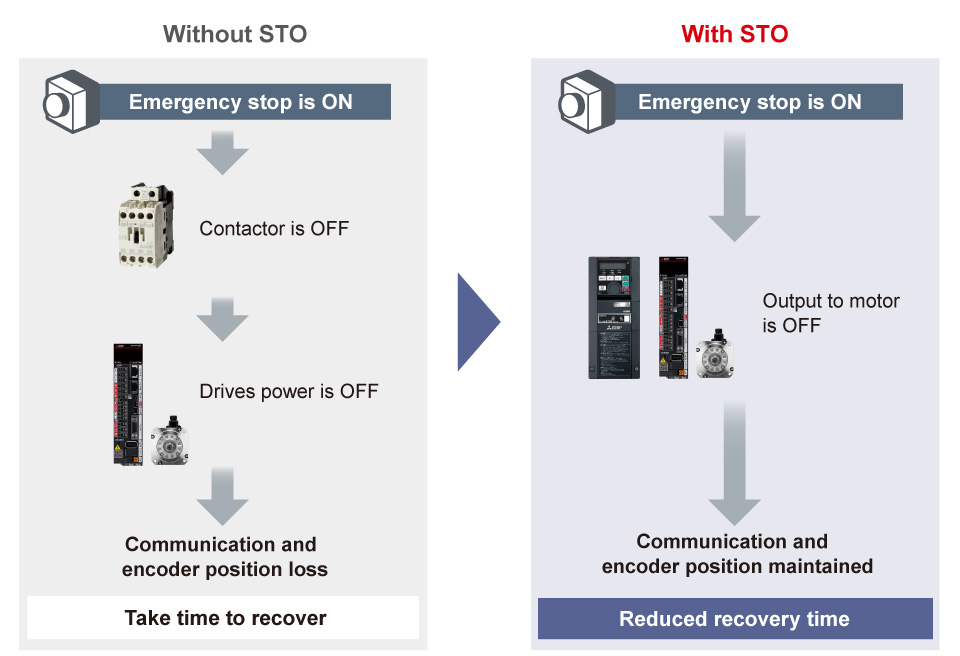
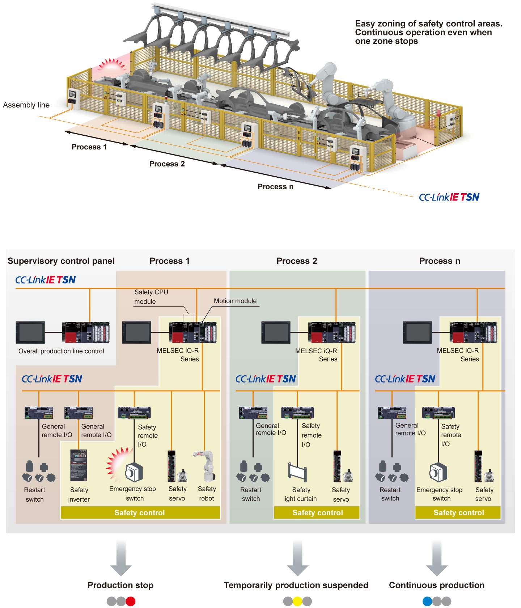

Controllers MELSEC iQ-R Series Fitur Produk -Solusi-

Meningkatkan keselamatan pabrik
Kebutuhan akan keselamatan mesin
Keselamatan tempat kerja telah bergantung pada pelatihan keselamatan. Namun, perangkat keselamatan semakin diperlukan untuk memastikan keselamatan operator terlepas dari intervensi manusia.
Keselamatan dari intervensi manusia
Masalah 1
Ketidakperhatian operator dan kesalahan kerja secara langsung menyebabkan kecelakaan.
Masalah 2
Keselamatan tempat kerja bergantung pada operator berpengalaman dan memastikan keselamatan sulit karena perubahan generasi.

Perangkat keselamatan memastikan keselamatan terlepas dari intervensi manusia
Poin1Memastikan keselamatan operator dengan memisahkan operator dan mesin dengan perangkat keselamatan
Mesin pengolahan makanan
Jika mixer mulai berjalan ketika operator memasukkan tangannya untuk memeriksa produk atau mengeluarkan benda asing, operator dapat terperangkap dalam mixer.
- Pengaman keselamatan memisahkan operator dari mixer untuk memastikan keselamatan operator
- Dengan menggabungkan kontroler keselamatan MELSEC-WS Series dengan switch kunci pintu dan pengaman keselamatan, interlock dapat dibuat sehingga mixer tidak akan berjalan saat pengaman keselamatan terbuka, mencegah tangan operator secara tidak sengaja terperangkap dalam mixer

Poin2Koordinasi antara servo, inverter, dan robot meningkatkan keselamatan dan produktivitas
- Menghubungkan drive keselamatan seperti servo, inverter, dan robot dengan modul CPU keselamatan MELSEC iQ-R Series, berbagai fungsi yang mematuhi standar keselamatan internasional seperti STO (Safe Torque Off) dan SLS (Safely-Limited Speed) dapat digunakan
- STO (Safe Torque Off) memastikan keselamatan operator tanpa mematikan energi penggerak menggunakan perangkat (seperti kontaktor) di luar drive, mengurangi waktu pemulihan

Poin3Waktu respons keselamatan yang lebih singkat mengurangi ruang instalasi
- Modul remote kombinasi I/O dengan fungsi keselamatan dapat dengan cepat mematikan output keselamatan tanpa melalui modul CPU keselamatan (fungsi logika cepat)
- Karena waktu respons keselamatan dapat dikurangi secara substansial, jarak antara sakelar pemberhentian darurat dan sumber bahaya dapat dipersingkat, mengurangi ruang instalasi

Poin4Memastikan keselamatan tanpa mengorbankan produktivitas bahkan dalam sistem skala besar
- Mengintegrasikan modul CPU keselamatan MELSEC iQ-R Series dan drive keselamatan ke dalam CC-Link IE TSN memastikan keselamatan pada sistem skala besar seperti lini perakitan otomotif
- Jika bahaya terjadi di proses 1 dan mesin dihentikan, mesin di proses 2 berhenti sementara. Namun, pada proses berikutnya, produksi akan berlanjut tanpa berhenti
- Pemberhentian darurat mesin dapat diaktifkan per proses, menghindari shutdown seluruh sistem dan memastikan keselamatan dan produktivitas
